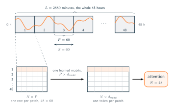
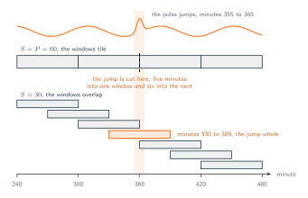
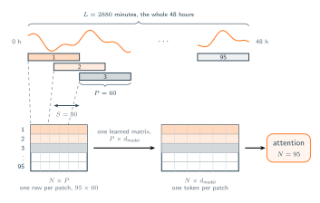

03 · Attention Over Time
Patches
Cutting the signal into windows.
If an instant carries no shape, then the repair is to stop making the instant the unit. Take the 2880 minutes of the stay and cut them into consecutive windows of sixty minutes, and let one window be one token. Minute 300 is then no longer a row of its own, it is one of the sixty numbers inside the window running from minute 300 to minute 359. That window rose, or fell, or held flat, or spiked once and came back, and sixty numbers in a fixed order can say any of those things. A window has a shape where a minute has only a value, and that shape is what we are interested in.
The second problem disappears simultaneously without any direct effort. By consolidating sixty minutes into a single window, the original 2880 rows are compressed into exactly 48 tokens. Working with 48 tokens generates only 2304 pairs to process instead of eight and a quarter million. The fundamental quadratic cost still exists. We have simply changed the frequency of this computation from once a minute to once an hour. Ultimately, the chosen length of the window serves as the main variable that determines the overall computational expense.
Written down, all of this is three numbers and a linear layer. Call $L$ the length of the stretch we are reading, $P$ the length of one patch, and $S$ the stride, the distance from the start of one patch to the start of the next. Cutting the stretch gives $$N = \lfloor (L - P)/S \rfloor + 1 \quad \text{patches}$$ So with $L = 2880$, $P = 60$ and $S = 60$ we get $N = 48$ windows that sit side by side without overlapping. Each patch is $P$ numbers, which makes the whole stretch an $N \times P$ matrix, and one learned matrix of shape $P \times d_{\text{model}}$ turns each row of it into a token. The sequence handed to attention is then $N \times d_{\text{model}}$. One thing has been quietly set aside in that paragraph, it describes a single channel, and the patient has three.
- $L$ is the lookback, how many minutes of the stay we read at once. Ours to choose, and here $L = 2880$, the whole 48 hours.
- $P$ is the patch length, how many minutes go into one window. Ours to choose, and here $P = 60$.
- $S$ is the stride, the distance from the start of one window to the start of the next. Ours to choose. $S = P$ makes the windows tile, $S < P$ makes them overlap.
- $N$ is the number of patches, and so the length of the sequence attention ends up reading. This one is not a choice, it follows from the other three.
- $d_{\text{model}}$ is the width of a token after the projection. Ours to choose, and unrelated to $P$: a window of sixty minutes can become a token of any width we like.
Three shapes come out of those five numbers. The patches are an $N \times P$ matrix, one row per window. The projection is a single learned $P \times d_{\text{model}}$ matrix, the same one applied to every row. What attention reads is $N \times d_{\text{model}}$, one token per window.

Nothing requires $S$ to equal $P$, and there is a good reason to make it smaller. Suppose the patient's pulse jumps at minute 355 and has settled again by minute 365. With $P = S = 60$ the windows start at minute 0, 60, 120 and so on, so that event is cut in half: five of its minutes fall at the end of the window covering 300 to 359, and the remaining six fall at the start of the next one. Neither token holds the event, and a shape split across two tokens is a shape the model has to reassemble rather than read. Halve the stride to $S = 30$ and the windows start at 0, 30, 60 and so on, so the window running from minute 330 to 389 contains the jump whole.

The bill moves with it. At $S = 30$ the same 48 hours give $$N = \lfloor (2880 - 60)/30 \rfloor + 1 = 95 \quad \text{patches}$$ That is 95 tokens instead of 48, which is 9025 pairs instead of 2304, and every minute now appears in two patches rather than one. That is the trade the stride controls: a smaller $S$ buys the guarantee that a short event lands inside some window whole, and pays for it in tokens. Overlapping patches are the usual choice in practice for exactly this reason.

Now go back to the three ways the patient might have arrived at minute 300, from section 02. We imagined the scenarios of a pulse falling from 120, climbing from 60, or remaining flat at 78 yielded the exact same row representation. These dynamics were inherently indistinguishable. However, applying a windowing approach from minutes 240 to 299 captures sixty sequential values that explicitly reflect the downward, upward, or stable trend. Because these yield three distinct rows, the model generates three unique tokens, queries, and score sets. The temporal trend, which could not be captured in a brief three-number row, is now intrinsically represented by the larger sixty-number sequence ($P = 60$).
This brings us back to the point we postponed earlier. We previously defined a patch over a single channel, which consists of sixty consecutive numbers from one specific signal. However, the patient data contains three distinct signals, and our current architecture does not specify how to handle the remaining two. One option is to stack them so a single token simultaneously captures the pulse, temperature, and lactate levels for the same hour. Alternatively, we could process three separate sequences for each signal and evaluate them independently. Both approaches are conceptually sound but result in fundamentally different models. The next section will explore how to choose between these two methods.